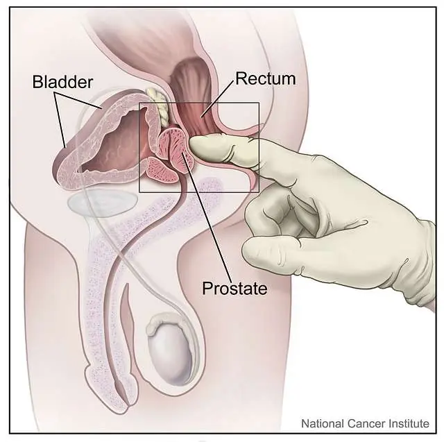
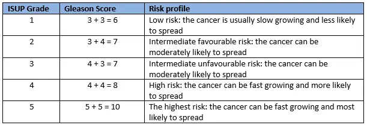
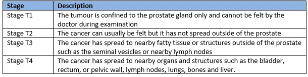

Getting Tested or Diagnosed
Overview
Men should be proactive in taking responsibility for their health & wellbeing, and getting tested regularly. More options are available if prostate cancer is detected before it causes symptoms (not common in the early stages). Not all doctors are proactive in promoting prostate cancer testing so men should be willing to take the initiative and request testing if they have any concerns, and wish to be tested.
If you’re over 50 then consider an annual prostate check that includes both a PSA blood test and a digital rectal examination (DRE). This should start from 45 years if there is known family history of prostate cancer, or from age 40 if there is a genetic predisposition to prostate cancer (BRCA2 gene variation, family history of breast, ovarian, prostate cancer or Lynch Syndrome). (Ref: Optimal cancer care pathway for people with prostate cancer. Te Aho o Te Kahu - Cancer Control Agency. 2024.)
Men over 50 (and those over 40 with known family history) should be tested at least every one to two years using both the PSA and DRE tests, under a programme of testing appropriate to them. The initial test will find a baseline level and subsequent tests can be recorded to note any significant change that may warrant further investigation. Regular testing should continue until mid-70s or later, depending on the risk profile that has been recorded.
Misinformation
Beware of misinformation. There is an old adage that ‘men will more likely die with prostate cancer than from prostate cancer’. While it is true that many cancers, particularly in older men, are slow growing and don’t need treatment or other intervention, prostate cancer remains a significant killer.
There is no easy way of diagnosing prostate cancer. Doctors will usually do a series of tests that may include the following:
PSA - Prostate Specific Antigen
The PSA is a simple blood test that looks for raised levels of a protein in the blood called prostate specific antigen (PSA), which is made by prostate cells. A PSA level that is above the limits for your age indicated that there could be a problem with the prostate and further tests might be necessary. This test is used as an initial screening test, usually ordered by a GP, and can be done in conjunction with other routine blood tests. The PSA test is only an indicator of the possibility of prostate cancer and a higher level doesn’t necessarily mean there is prostate cancer.
A high PSA can be caused by other conditions such as Benign Prostatic Hyperplasia (BPH) or enlarged prostate (a common condition that occurs when the prostate grows larger with age); or Prostatitis which is an infection or inflammation of the prostate, where the prostate becomes inflamed and sore.
Other things that can influence the PSA level
Home PSA testing kits
At the Prostate Cancer Foundation of NZ, we are aware that a number of home PSA testing kits and laboratory services are now available for purchase at pharmacies or directly to the public. Many people value privacy and convenience in health decisions, so it’s understandable that these options are appealing. However, we strongly advise speaking with a healthcare professional before considering PSA testing.

Digital Rectal Examination (DRE)
The DRE is a test where the doctor inserts a gloved, lubricated finger into the rectum to feel the prostate and check the size, shape and for any abnormalities. Occasionally a cancer can be felt this way, but not always. A normal DRE exam does not rule out prostate cancer.
If there are possible indications of prostate cancer from the initial PSA and DRE tests carried out by the GP, a referral will be made to a urologist (medical specialist in prostate cancer and other urinary conditions) who will conduct further tests to actually diagnose the disease.
Overview
Going through further testing and a diagnosis can be both physically and emotionally challenging. If possible, have someone close to you attend the appointments with you, to help recall the discussions. It can also help to write down questions you would like answered, and to make notes of the information you receive. If all parties agree, you might like to record the discussion on your mobile device.
MRI – Magnetic Resonance Imaging
An MRI scan is ordered to assess the prostate size and look for any abnormal areas. It is used to determine the likelihood that cancer is present in the prostate and which part of the prostate is affected. An MRI is performed as an outpatient procedure, without the need to be admitted to a hospital. Patients lie on a special bed that passes through a narrow tunnel while the scans are being taken. If they experience claustrophobia, they may require sedation for this scan. It is important to tell the doctor about any metallic implants (e.g. screws or plates) in your body or medical devices (e.g. pacemaker or cochlear implant), or if you have had joint surgery.
Multiparametric Magnetic Resonance Imaging (mpMRI)
Is a more accurate and detailed MRI scan that combines the results of at least three different scanning techniques to get a clearer picture of the prostate. Not all DHBs in New Zealand will provide funded MRI scans but they are available for a reasonable cost in private clinics.
Biopsy
A biopsy is a surgical procedure where a needle is used to remove multiple small samples of tissue from the prostate. There are two ways the procedure can be performed:
- 1. Transrectal ultrasound [TRUS] biopsy, which can be done under local anaesthetic in a consulting room or in a hospital.
- 2. Transperineal biopsy – through the perineum, performed in hospital under general anaesthetic.
The biopsy samples will be sent to a pathology laboratory to be examined where the pathologist will determine if there are cancer cells present in the sample. This is how a definitive diagnosis of prostate cancer can be made. If the biopsy does not show any cancer, patients will probably be monitored with regular ongoing check-ups and repeat PSA tests and, if necessary, may need another biopsy or an MRI scan at a later date. A biopsy report that confirms the presence of cancer will provide information about the type of cancer present.
Bone scan
This involves injecting a weak radioactive substance into the body to see if there are cancer cells damaging the bone. A positive scan may not mean you have prostate cancer – it can also be due to other causes of bone damage such as an old fracture or inflammation.
CT (Computerised tomography) Scan
A CT scan uses X-ray beams to create detailed images of the inside of the body. The scan may be done to show where in the body the cancer has spread, based on locating abnormal features such as enlarged lymph nodes or bony outgrowths.
PSMA-PET scan
PSMA stands for prostate specific membrane antigen, a protein found on the surface of prostate cells. A PSMA-PET scan (also known as a ‘gallium’ scan or an ‘F18’ scan) involves injecting a radioactive substance attached to a molecule that can stick to PSMA in the body. This is a very sensitive and accurate way to image and accurately locate prostate cancer wherever it is in the body as cancer cells can show up brighter on the operator’s screen during the scan. It is typically used to see if cancer cells have migrated away from the prostate gland and formed metastases in other sites. Not all DHBs in New Zealand will provide funded PSMA-PET scans but they are available in private clinics.
Making a diagnosis
Once the urologis have the results of the various tests a more accurate diagnosis can be made and the treatment options assessed. There are two main criteria that will be considered:
Localised cancer (T1 and T2) remain within the prostate gland are potentially curable with surgery and radiation therapy.Localised advanced cancer may include seminal vesicles (T3) and, rectum, bladder, local lymph nodes and pelvic wall (T4). These cancers are potentially curable with surgery and radiation therapy.Metastatic cancer has spread / metastasised to lymph nodes outside of the pelvis or to bones or other organs. These Stage 4 cancers are not curable by surgery or radiation therapy.



The outlook post-diagnosis
Following a prostate cancer diagnosis most people want to know whether their cancer can be successfully treated. The outcome of the treatment will depend on several things such as the type of cancer and whether it has spread, how quickly it grows, and how well the treatment works. If the prostate cancer is localised to the prostate gland, it is sometimes slow growing and may never need treatment. Other localised prostate cancers do require treatment and often is it possible to successfully get rid of the cancer. If the cancer has spread outside of the prostate gland, treatments can often keep it under control for many years.
It can be valuable to get a second opinion about the results and treatment options. This doesn't mean you have less faith in your doctor, but talking it through with another doctor or health professional who understands prostate cancer can help clear up any concerns, and help you understand the best treatment and support options for you.
Section 1 of 2